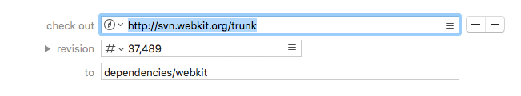
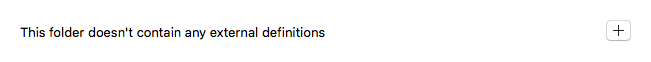
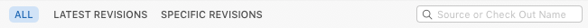

Editing Externals with the Definitions List View
The list view displays externals definitions as a list, with each definition represented by a separate form:

The fields are as follows:
-
check out
The URL to check out the dependency from.
See the section on URL Formats for more information on the various supported formats.
Click the  button to show an open panel to select a URL from one of the repositories in Cornerstone’s repository source list.
button to show an open panel to select a URL from one of the repositories in Cornerstone’s repository source list.
Incorrect URLs will cause errors during subsequent check out and update operations, so double-check that they are correct before saving any changes.
The absolute URL to check out from is displayed in a callout whenever text is entered into the check out field. This can help you check that relative URLs are correct.
-
revision
The revision to check out. Specify a number to reference a specific revision.
See Externals: Best Practices for more information on how to specify revisions with externals.
Expand the revision field if you need to provide both an operative revision and a peg revision. If the revision field is left collapsed then the specified revision is saved as the peg revision and the operative revision is omitted.
Date revisions are not supported in external definitions.
-
to
The path into which the dependent code will be checked out, relative to the folder declaring the svn:externals property.
The path can contain folders (e.g. as dependencies/webkit) in which case intermediary folders such as dependencies will be created automatically.
This folder should not already be under version control.
You can change the order of definitions in list view by dragging them with the mouse. Definitions can also be dragged from one editor to another.
Adding the First Definition
If the selected folder does not currently define any externals then the following placeholder is displayed:

Click the add button to add the first definition.
Inserting a New Definition
To insert a new definition after an existing definition, click the definition’s add button . To insert a definition before an existing definition, hold down the Option (⌥) key while pressing the add button.
Removing a Definition
Delete a definition from the list by clicking the definition’s remove button .
Cornerstone will remove the folder’s svn:externals property from the folder when saved if the property does not contain any definitions.
The Filter Bar
The definition list view provides a filter bar which provides quick access to commonly-used filters which can help you to quickly find an external of interest:

The filters are:
-
All ^A
Removes the other filters to show all items. The search field is not reset.
-
Latest Revisions ^L
Shows only external definitions where the revision is set to Latest in repository (HEAD).
-
Specific Revisions ^S
Shows only external definitions where the revision is set to a specific number.
Search Field
The search text box can be used to search for matching check out URLs and to paths in the definitions which match the currently selected filter.